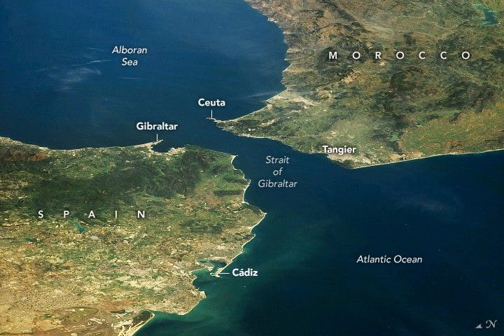

Strâmtoarea Gibraltar este o strâmtoare care leagă Oceanul Atlantic de Marea Mediterană și separă Spania de Maroc. Numele ei vine de la Gibraltar, care la rândul său vine din limba arabă Jebel at-Tariq, însemnând muntele lui Tariq. Se referă la generalul berber ummayad Tariq ibn-Ziyad(care în anul 711 a traversat Strâmtoarea Gibraltar și a învins vizigoții în Bătălia de la Guadalete. Această victorie a dus la cucerirea rapidă a Peninsulei Iberice și la întemeierea stăpânirii musulmane)
Climat mediteranean, direct lângă Marea Mediterană
Relieful muntos de pe coasta Mării Alboran formează Sistemul Arcului Gibraltarului, creat prin activitate tectonică complexă. Acesta cuprinde Munții Baetic (sud-vestul Spaniei) și Munții Rif (nordul Marocului).
Acum circa 6 milioane de ani, ridicarea Arcului Gibraltar și schimbările climatice au izolat Marea Mediterană de Oceanul Atlantic. Apa s-a evaporat complet, lăsând un bazin adânc de aproximativ 1.500 metri. După circa 300.000 de ani, precipitațiile au crescut, iar apa din Atlantic a re-inundat bazinul cu un debit uriaș, formând marea de astăzi.
Era cunoscută în antichitate sub numele „Coloanele lui Hercule”, deoarece cei vechi credeau că lumea se termină la Gibraltar. Și pentru că legenda atribuia lui Hercule performanța de a fi atins capătul lumii, cele două promontorii (cel african și cel european) care străjuiesc intrarea în strîmtoarea Gibraltar, au fost botezate de romani „coloanele lui Hercule”.
